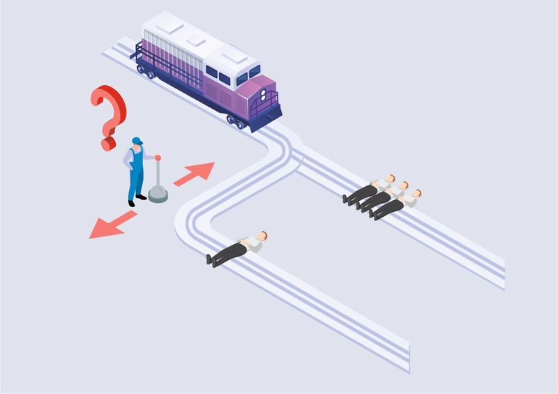
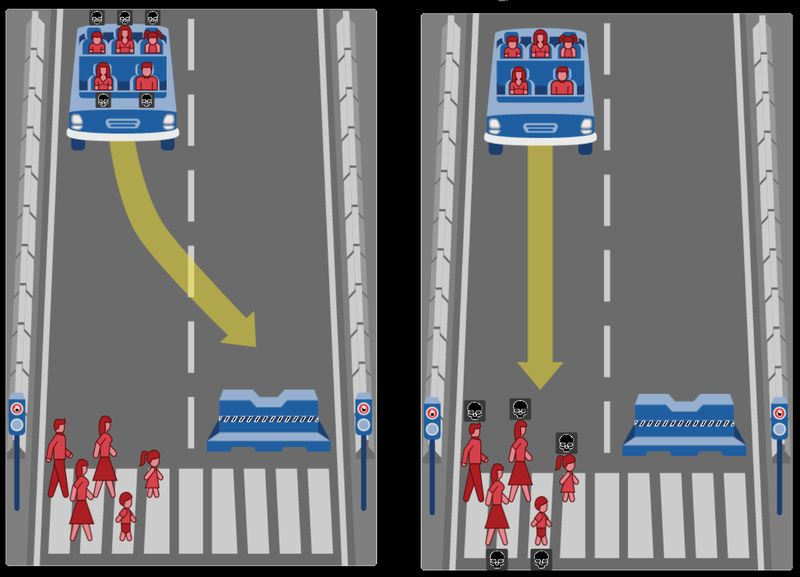

Enseña a la máquina: datos, sesgos e inteligencia artificial
S7 · Demo, sesgos y ética
De qué va esta sesión
Última sesión. Enseñáis vuestro reconocedor funcionando y después hacéis lo que casi nadie
hace: analizar en serio sus límites. Con lo que habéis vivido estas semanas
vais a entender casos reales de discriminación algorítmica mucho mejor que leyendo cien
noticias.
1. La demo
Presentad vuestro reconocedor (5 minutos por equipo)
Qué hace: qué signos reconoce y para qué podría servir.
Demostradlo: los signos delante de la cámara si la tenéis; si no,
pasando los disfraces con vuestras fotos de prueba.
La prueba difícil: que lo pruebe alguien de otro equipo, con sus propias
manos. En directo si hay cámara; con dos o tres fotos suyas hechas al momento si no.
Vuestros números: cuántas imágenes por clase, cuántas personas
aportaron, qué porcentaje de acierto habéis medido.
Qué falla y por qué creéis que falla.
El punto 5 vale tanto como el 2. Un equipo que explica bien por qué su modelo falla ha
aprendido más que uno cuyo modelo acierta por casualidad.
2. Sesgo: cuando el problema no es el algoritmo, son los datos
Un modelo aprende solo lo que hay en sus datos. Si sus ejemplos son
parciales, será parcial. A eso se le llama sesgo, y no es un fallo raro: es
lo normal si nadie se ocupa de evitarlo.
Vuestro propio sesgo, medido por vosotros
Si vuestro modelo acierta con vuestras manos y falla con las de otro equipo, acabáis de
reproducir en pequeño el sesgo algorítmico. La causa es exactamente la misma: el conjunto de
entrenamiento representaba a unas pocas personas, no a todas.
Tres casos reales
Caso
Qué pasó
Por qué
Gender Shades (2018)
Un estudio del MIT probó los sistemas de reconocimiento facial de tres grandes empresas. Con hombres de piel clara fallaban menos del 1 % de las veces; con mujeres de piel oscura, hasta un 34,7 %.
Los conjuntos de imágenes con los que se entrenaron estaban llenos de caras de hombres blancos.
Detenciones erróneas (desde 2020)
En Estados Unidos hay más de una decena de personas detenidas por error tras un falso positivo de reconocimiento facial policial. Casi todas eran personas negras. Una de ellas, embarazada de ocho meses, pasó once horas detenida.
El mismo sesgo del caso anterior, pero con consecuencias sobre personas reales.
Generadores de imágenes (2023-2026)
Al pedirles «una persona directiva» o «alguien juez» devuelven mayoritariamente hombres blancos; con ciertos países producen estereotipos ofensivos.
Se entrenaron con miles de millones de imágenes recogidas de internet, con todos los desequilibrios que internet ya tiene.
La conclusión incómoda
Ninguno de estos sistemas fue programado para discriminar. Nadie escribió una regla
racista. El sesgo entró por los datos, en silencio, y salió por las
decisiones. Por eso preguntarse «¿con qué datos se ha entrenado esto?» no es una curiosidad
técnica: es la pregunta principal.
3. Dónde están los límites
Esta pregunta ya no es solo de opinión. En la Unión Europea existe desde 2024 el
Reglamento de Inteligencia Artificial (Reglamento UE 2024/1689), y desde
febrero de 2025 hay usos de la IA directamente prohibidos. Entre otros:
Reconocimiento facial en directo en espacios públicos con fines
policiales, salvo excepciones muy concretas y autorizadas (buscar a una persona desaparecida,
un atentado inminente).
Recopilar caras de internet o de cámaras para construir bases de datos de
reconocimiento facial.
Puntuación social: clasificar a las personas por su comportamiento para
darles un trato distinto.
Reconocimiento de emociones en centros educativos y en el trabajo. Sí:
un sistema que intentara deducir por la cara si estáis atendiendo en clase
sería ilegal en la UE.
Actividad 10 — El debate que ya tiene respuesta

Imaginad que alguien propone instalar cámaras con IA en las calles de vuestro pueblo para
detectar automáticamente a personas sospechosas.
Antes de mirar la ley: en equipo, dos argumentos a favor y dos en contra.
Ahora mirad la lista de prohibiciones de arriba. ¿Sería legal en la UE?
La pregunta interesante: ¿por qué creéis que se ha prohibido? Y las
excepciones que sí se permiten, ¿os parecen razonables o una puerta trasera?
Conectadlo con lo vuestro: si vuestro modelo falla más con unas manos que con otras,
¿qué pasaría si un sistema así fallara más con unas caras que con otras?
Extensión: probad
Moral Machine,
del MIT, donde tenéis que decidir qué debe hacer un coche autónomo ante un accidente
inevitable. Comparad vuestras respuestas dentro del equipo: ¿coincidís? Si ni siquiera vosotros
os ponéis de acuerdo, ¿quién programa esa decisión?

4. Entrega final
Reflexión sobre datos, sesgos y ética
Completad en equipo el documento de reflexión que hay en la tarea de Classroom. Estas son
las preguntas:
Vuestros datos. ¿Qué signos elegisteis y por qué? ¿Cuántas imágenes por
clase? ¿Cuántas personas distintas aportaron imágenes? ¿En qué condiciones de luz y fondo?
Vuestros resultados. ¿Qué porcentaje de acierto obtuvisteis con
vuestras imágenes de prueba? ¿Y cuando lo probó otro equipo? Si hay diferencia, explicadla.
Vuestro sesgo. ¿Con qué tipo de persona funcionaría peor vuestro
reconocedor? Sed concretos. ¿Qué habría que hacer para arreglarlo?
Y si los datos fueran robados. Podríais haber conseguido miles de fotos
de manos por scraping en vez de hacerlas vosotros. El modelo habría funcionado
mejor. ¿Qué problemas tendría hacerlo? ¿Cambia algo que sea para un trabajo de clase?
Uso responsable. Un reconocedor de lengua de signos puede ayudar mucho
a la comunicación. Pensad un uso claramente bueno y un uso claramente malo de la misma
tecnología. ¿Qué diferencia a uno del otro?
Lo que os lleváis. Terminad esta frase con lo que de verdad habéis
aprendido: «Antes de esta unidad pensaba que la inteligencia artificial…, y ahora sé
que…».
Nombre del archivo: reflexion_equipo.pdf. Sin nombres ni apellidos dentro.
Checklist del reto (revisad antes de entregar)
reto_signos.json — conjunto de imágenes final
reto_signos.sb3 — programa de Scratch con el modelo dentro
reflexion_equipo.pdf — documento de reflexión
Demo hecha en clase, incluida la prueba con otro equipo